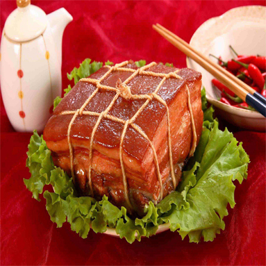

| 东坡肉又名滚肉、红烧肉，东坡焖肉，是眉山和江南地区特色传统名菜。 [1] 东坡肉在苏菜、浙菜、川菜、鄂菜等菜系中都有，且各地做法也有不同，有先煮后烧的，有先煮后蒸的，有直接焖煮收汁的。 东坡肉的主料和造型大同小异，主料都是半肥半瘦的猪肉，成品菜都是码得整整齐齐的麻将块儿，红得透亮，色如玛瑙，夹起一块尝尝，软而不烂，肥而不腻。 |
| ⊙小火慢慢炖 | ||
| 东坡肉相传为北宋词人苏东坡（四川眉山人）所创制（一说为其小妾王朝云创制（苏被贬黄州之际王为改善其饮食所创）），最早发源地是四川眉山。原型是徐州回赠肉， 为徐州“东坡四珍”之一。
|
||
|  | ||